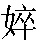

烈文先生：
“此公”盖甚雄于文，今日送来短评十篇，今先寄二分之一，余当续寄；但颇善虑，必欲我索回原稿，故希先生于排印后，陆续见还，俾我得以交代为幸。
其实，此公文体，与我殊不同，思想亦不一致，而杨公邨人，又疑是拙作，闻在《时事新报》（？）上讲冷话，[151]自以为善嗅，而又不确，此其所以为吧儿狗欤。
此布，即请
著安。
迅 顿首 四月一夜
注 释
[151] 1934年3月17日《申报·自由谈》发表徐诗荃署名“古明”的《再论京派、海派及其他》一文，其中说：“几个小卒小

在文坛上乱捧乱喝，大分其‘京’、‘海’，无以名之，名之曰‘野狐禅’，野狐而大谈禅理，其理之荒唐可知。”同年3月23日《时事新报·学灯》发表杨邨人针对上文写的《海派罪状的揭发》一文，其中说：“我为了澄清文坛上的污浊而有揭发海派的黑幕声罪致讨之举，这本来非海派的人们是谁都没有话说的，……却引起了兔死狐悲的同类人群起而反攻，甚至于某大文豪御驾亲征令檄四方面，攻击海派者无以名之，名之曰野狐禅。于是海派无罪，攻击海派者反成暴德。”这里的“某大文豪”暗指鲁迅，因鲁迅在同年2月3日曾署名“栾廷石”在《申报·自由谈》上发表过《“京派”与“海派”》一文，杨邨人遂将“古明”误作鲁迅。